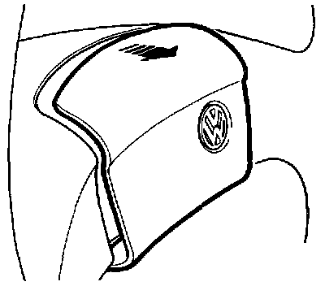
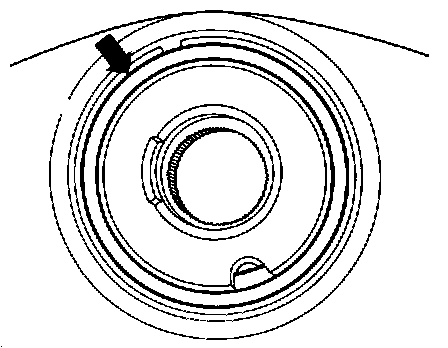
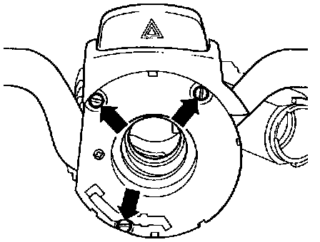
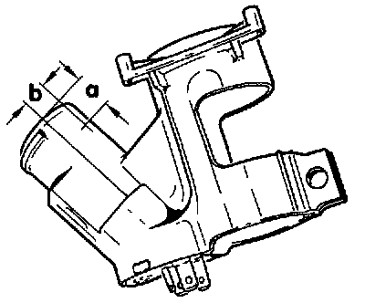

Ignition Switch: Service and Repair
Steering column, assembly
WARNING: Special safety precautions and some different procedures apply to vehicles equipped with airbags
CAUTION: Before working on the electrical system:
Obtain radio anti-theft code.
Ignition OFF !
Disconnect battery Ground (GND) strap.
Note: After reconnecting battery: Activate vehicle equipment such as radio, clock and power windows as per service procedures and/or Owner's Manual.
On vehicles equipped with OBD II, activate readiness code. Refer to Powertrain Management, Computers and Control Systems, Testing and Inspection, Procedures Testing and Inspection
For further information on the steering column assembly, refer to Steering and Suspension, Steering, Steering Column, Service and Repair Steering Column Tube & Steering Wheel, Servicing

1. - Horn pad
- Removing, Fig. 1
2. - Horn plate
- Removing, Fig. 2
3. - 50 ±10 Nm (37 ±7 ft lb)
4. - Steering wheel
- Horn contact ring, Fig. 3
- Lubricate horn ring with universal grease
5. - Steering column switch securing screws
6. - Combination switch
- Turn signal switch. -E2-
- Headlight dimmer/flasher switch -E4-
- Emergency flasher switch -E3-
- Removing, Fig. 4
7. - Windshield wiper/washer switch -E22-
- Removing, Fig. 4
8. - Upper steering column trim
9. - Lower steering column trim
10. - Steering column
11. - Support ring
12. - Steering lock housing securing bolt
- Shear bolt
13. - Steering lock housing
- Removing and installing, refer to Steering and Suspension, Steering, Steering Column, Service and Repair Steering Column Tube & Steering Wheel, Servicing
14. - Ignition/starter switch -D-
- To remove, first remove steering lock housing, then remove securing screws
15. - Lock cylinder
- Removing/installing, Fig. 5
16. - Spring
17. - Clamping washer

Fig. 1 Horn pad, removing
WARNING! Vehicles with airbags, refer to Service Precautions Service Precautions
Vehicles without airbag
- Lift horn pad at bottom and pull from steering wheel in direction of arrow.
- Remove horn wire.

Fig. 2 Horn plate, removing
- Remove wire connector from horn plate.
- Disengage retaining lugs -arrows- and remove contact plate -A- from contact plate -B-.
Note: The horn plate consists of two non insulated contact plates. Horn operates when the horn pad is pressed and plate -A- contacts plate -B- .

Fig. 3 Horn contact ring
The battery positive voltage (B+) for horn operation is supplied via a spring contact on the turn signal switch and a contact (slip) ring -arrow- under the steering wheel.

Fig. 4 Turn signal switch -E2- and windshield wiper/washer switch -E22-, removing
- Remove steering wheel. Service and Repair
- Remove switch securing screws -arrows-.
- Disconnect switch connector.
- Remove turn signal switch -E2- andwindshield wiper/washer switch -E22- from steering column.

Fig. 5 Lock cylinder, removing and installing
Removing
- Remove steering lock housing. Steering Column Tube & Steering Wheel, Servicing
- Mark steering lock housing for hole at intersection of points -a- and -b-.
Dimension -a- = 12 mm (15/32 in.)
Dimension -b- = 10 mm (25/64 in.)
- Drill 3 mm (1/8 in.) diameter hole into steering lock housing at mark until lock cylinder stop spring is visible.
Hole depth: approx. 3 mm (1/8 in.)
- Compress stop spring using opposite end of drill and pull out lock cylinder.
Installing
- Insert lock cylinder into steering lock housing.
- Insert key into lock cylinder.
- Push lock cylinder fully into housing while gently turning key.
Steering column switches, connector wiring
Steering Column Switches, Connector Wiring:

A. Ignition/starter switch -D-
1. Ignition/starter switch -D-, terminal 15 (B+ with key on)
2. Ignition/starter switch -D-, terminal X (B+ with key on)
3. Ignition/starter switch -D-, terminal 50
4. Ignition/starter switch -D-, terminal 30 (B+)
5. Ignition/starter switch -D-, terminal SU
6. Ignition/starter switch -D-, terminal P
B. Connector, 5-point
1. Windshield wiper/washer switch -E22-, terminal 53b
2. Windshield wiper/washer switch -E22-, terminal 53a
3. Windshield wiper/washer switch -E22-, terminal 53
4. Windshield wiper/washer switch -E22-, terminal 53e
5. Windshield wiper/washer switch -E22-, terminal J
C. Connector, 5-point
1. Emergency flasher switch -E3-,terminal 49
2. Headlight dimmer/flasher switch -E4-, terminal 56b
3. Headlight dimmer/flasher switch -E4-, terminal 56
4. Headlight dimmer/flasher switch -E4-, terminal 56a
5. Headlight dimmer/flasher switch -E4-, terminal 30 (B+)
D. Connector, 4-point
1. Windshield wiper/washer switch -E22-, terminal L
2. Windshield wiper/washer switch -E22-, terminal T
3. Windshield wiper/washer switch -E22-, terminal 31 (GND)
4. Emergency flasher switch -E3-, terminal 15 (B+ with key on)
E. Connector, 7-point
1. Horn button, terminal 71
2. Emergency flasher switch -E3-, terminal 49a
3. Turn signal switch -E2-, terminal L
4. Parking light switch -E19-, terminal PL
5. Parking light switch -E19-, terminal P
6. Parking light switch -E19-, terminal PR
7. Turn signal switch -E2-, terminal R